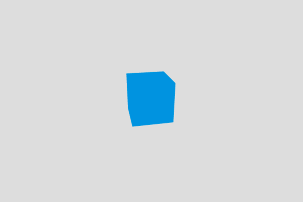
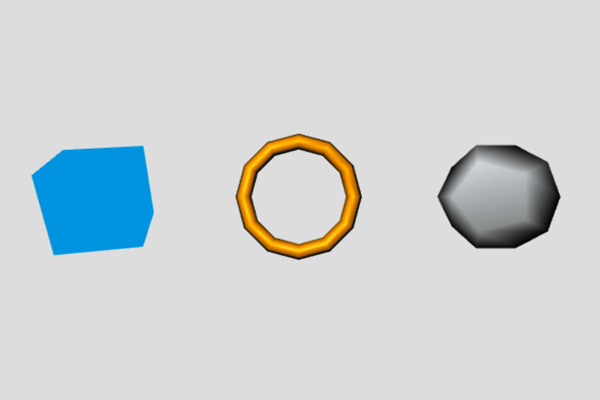

Building up a basic demo with Three.js
A typical 3D scene in a game — even the simplest one — contains standard items like shapes located in a coordinate system, a camera to actually see them, lights and materials to make it look better, animations to make it look alive, etc. Three.js, as with any other 3D library, provides built-in helper functions to help you implement common 3D functionality more quickly. In this article we'll take you through the real basics of using Three, including setting up a development environment, structuring the necessary HTML, the fundamental objects of Three, and how to build up a basic demo.
Note: We chose Three because it is one of the most popular WebGL libraries, and it is easy to get started with. We are not trying to say it is better than any other WebGL library available, and you should feel free to try another library, such as CopperLicht, GLGE, or PlayCanvas.
Environment setup
To start developing with Three.js, you don't need much. You should:
- Make sure you are using a modern browser with good WebGL support, such as the latest Firefox or Chrome.
- Create a directory to store your experiments in.
- Save a copy of the latest minimized Three.js library inside your directory.
- Open the Three.js documentation in a separate tab — it is useful to refer to.
HTML structure
Here's the HTML structure we will use:
<!DOCTYPE html>
<html lang="en-GB">
<head>
<meta charset="utf-8" />
<title>MDN Games: Three.js demo</title>
<style>
body {
margin: 0;
padding: 0;
}
canvas {
width: 100%;
height: 100%;
}
</style>
</head>
<body>
<script src="three.min.js"></script>
<script>
const WIDTH = window.innerWidth;
const HEIGHT = window.innerHeight;
/* all our JavaScript code goes here */
</script>
</body>
</html>
It contains some basic information like the document <title>, and some CSS to set the width and height of the <canvas> element, that Three.js will insert on the page to 100% to fill the entire available viewport space. The first <script> element includes the Three.js library in the page, and we will write our example code inside the second. There are two helper variables already included, which store the window's width and height.
Before reading further, copy this code to a new text file, and save it in your working directory as index.html.
Renderer
A renderer is a tool which displays scenes right in your browser. There are a few different renderers: WebGL is the default, and others you can use are Canvas, SVG, CSS, and DOM. They differ in how everything is rendered, so the WebGL implementation will implement differently than the CSS one. Despite the variety of ways they achieve the goal, the experience will look the same for the user. Thanks to this approach, a fallback can be used, if a desired technology is not supported by the browser.
const renderer = new THREE.WebGLRenderer({ antialias: true });
renderer.setSize(WIDTH, HEIGHT);
renderer.setClearColor(0xdddddd, 1);
document.body.appendChild(renderer.domElement);
We are creating a new WebGL renderer, setting its size to fit the whole available space on the screen, and appending the DOM structure to the page. You might have noticed the antialias parameter in the first line — this renders the edges of shapes more smoothly. The setClearColor() method sets our background to a light gray color, instead of the default black one.
Add this code into our second <script> element, just below the JavaScript comment.
Scene
A scene is the place where everything happens. When creating new objects in the demo, we add them all inside the scene to become visible on the screen. In three.js, the scene is represented by a Scene object. Let's create it, by adding the following line below our previous lines:
const scene = new THREE.Scene();
Later, we will be using the .add() method, to add objects to this scene.
Camera
We have the rendered scene, but we still need to add a camera to view our handiwork — imagine a movie set without any cameras. The following lines put the camera in place in the 3D coordinate system, and point it in the direction of our scene, so we can finally see something:
const camera = new THREE.PerspectiveCamera(70, WIDTH / HEIGHT);
camera.position.z = 50;
scene.add(camera);
Add the above lines to your code, below those previously added.
There are other types of camera available (Cube, Orthographic), but the simplest is Perspective. To initialize it, we have to set its field of view and aspect ratio: the former is used to set how much is seen, and the latter is important for the objects on the screen to have the right proportions when rendered, and not look stretched. Let's explain values we are setting for the code above:
- The value we set for the field of view, 70, is something we can experiment with: the higher the value, the greater the amount of scene the camera will show. Imagine a normal camera view, versus a fish eye effect, which allows a lot more to be seen. The default value is 50.
- The aspect ratio is set to the current width and height of the window so it will be dynamically adjusted. We could set a fixed ratio — for example 16 ⁄ 9, which is the aspect ratio of a widescreen TV. The default value is 1.
- The
zposition, with the value of 50 units, is the distance between the camera and the center of the scene on thezaxis. Here we're moving the camera back, so the objects in the scene can be viewed. 50 feels about right. It's not too near, or too far, and the sizes of the objects allow them to stay on the scene, within the given field of view. Thexandyvalues, if not specified, will default to 0.
You should experiment with these values and see how they change what you see in the scene.
Note: The distance values (e.g. for the camera z position) are unitless, and can be anything you deem suitable for your scene: millimeters, meters, feet, or miles. It's up to you.
Rendering the scene
Everything is ready, but we still can't see anything. Although we've set up the renderer, we still need to render everything. Our render() function will do this job, with a little help from requestAnimationFrame(), which causes the scene to be re-rendered constantly on every frame:
function render() {
requestAnimationFrame(render);
renderer.render(scene, camera);
}
render();
On every new frame the render function is invoked, and the renderer renders the scene and the camera. Right after the function declaration, we're invoking it for the first time to start the loop, after which it will be used indefinitely.
Again, add this new code below your previous additions. Try saving the file and opening it in your browser. You should now see a gray window. Congratulations!
Geometry
Now our scene is properly rendering, we can start adding 3D shapes. To speed up development, Three.js provides a bunch of predefined primitives, which you can use to create shapes instantly in a single line of code. There's cubes, spheres, cylinders, and more complicated shapes available. Detail like drawing required vertices and faces, for a given shape, is handled by the Three framework, so we can focus on higher level coding. Let's start, by defining the geometry for a cube shape, adding the following just above the render() function:
const boxGeometry = new THREE.BoxGeometry(10, 10, 10);
In this case, we define a simple cube that is 10 x 10 x 10 units. The geometry itself is not enough though, we also need a material that will be used for our shape.
Material
A material is what covers an object, the colors, or textures on its surface. In our case, we will choose a simple blue color to paint our box. There are a number of predefined materials which can be used: Basic, Phong, Lambert. Let's play with the last two later, but for now, the Basic one should be enough:
const basicMaterial = new THREE.MeshBasicMaterial({ color: 0x0095dd });
Add this line below the previously added.
Our material is now ready, what next?
Mesh
To apply the material to a geometry, a mesh is used. This takes on a shape, and adds the specified material to every face:
const cube = new THREE.Mesh(boxGeometry, basicMaterial);
Again, add this line below the one you previously added.
Adding the cube to the scene
We've now created a cube, using the geometry and material defined earlier. The last thing to do is to place the cube to our scene. Add this line below the previous one:
scene.add(cube);
If you save, and refresh your Web browser, our object will now look like a square, because it's facing the camera. The good thing about objects, is that we can move them on the scene, however we want. For example, rotating and scaling as we like. Let's apply a little rotation to the cube, so we can see more than one face. Again, adding our code below the previous:
cube.rotation.set(0.4, 0.2, 0);
Congratulations, you've created an object in a 3D environment! This might have proven easier than you first thought? Here's how it should look:

And here's the code we have created so far:
You can also check it out on GitHub.
More shapes and materials
Now we will add more shapes to the scene, and explore other shapes, materials, lighting, and more. Let's move the cube to the left, to make space for some friends. Adding the following line just below the previous one:
cube.position.x = -25;
Now onto more shapes and materials. What might happen when you add a torus, wrapped in the Phong material? Try adding the following lines, just below the lines defining the cube.
const torusGeometry = new THREE.TorusGeometry(7, 1, 6, 12);
const phongMaterial = new THREE.MeshPhongMaterial({ color: 0xff9500 });
const torus = new THREE.Mesh(torusGeometry, phongMaterial);
scene.add(torus);
These lines will add a torus geometry; the TorusGeometry() method's parameters define, and the parameters are radius, tube diameter, radial segment count, and tubular segment count. The Phong material should look more glossy than the box's simple Basic material, though right now our torus will just look black.
We can choose more fun predefined shapes. Let's play some more. Add the following lines, below those defining the torus:
const dodecahedronGeometry = new THREE.DodecahedronGeometry(7);
const lambertMaterial = new THREE.MeshLambertMaterial({ color: 0xeaeff2 });
const dodecahedron = new THREE.Mesh(dodecahedronGeometry, lambertMaterial);
dodecahedron.position.x = 25;
scene.add(dodecahedron);
This time, we are creating a dodecahedron, a shape containing twelve flat faces. The parameter, DodecahedronGeometry(), defines the size of the object. We're using a Lambert material, similar to Phong, but should be less glossy. Again it's black, for now. We're moving the object to the right, so it's not in the same position as the box, or torus.
As mentioned above, the new objects currently just look black. To have both, the Phong and Lambert materials properly visible, we need to introduce a source of light.
Lights
There are various types of light sources available in Three.js. The most basic is PointLight, which works like a flashlight, shining a spotlight in a defined direction. Add the following lines, below your shape definitions:
const light = new THREE.PointLight(0xffffff);
light.position.set(-10, 15, 50);
scene.add(light);
We define a white point of light, set its position a little away from the center of the scene, so it can light up some parts of the shapes, finally adding it to the scene. Now everything works as it should, all three shapes are visible. You should check the documentation for other types of lights, like Ambient, Directional, Hemisphere, or Spot. Experiment placing them on our scene, to see how they affect it.

This looks a little boring though. In a game, something is usually happening. We might see animations and such. So let's try breathing a little life into these shapes, by animating them!
Animation
We already used rotation, to adjust the position of the cube. We can also scale the shapes, or change their positions. To show animation, we need to make changes to these values inside the render loop, so they update on each frame.
Rotation
Rotating is straightforward. You add a value to a given direction of rotation on each frame. Add this line of code, right after the requestAnimationFrame() invocation inside the render function:
cube.rotation.y += 0.01;
This rotates the cube on every frame, by a tiny bit, so the animation looks smooth.
Scaling
We can also scale an object. Applying a constant value, we would make it grow, or shrink just once. Let's make things more interesting. First, we implement a helper variable, called t, for counting elapsed time. Add it right before the render() function:
let t = 0;
Now let's increase the value by a given constant value, on each frame of the animation. Add the following lines, just below the requestAnimationFrame() invocation:
t += 0.01;
torus.scale.y = Math.abs(Math.sin(t));
We use Math.sin, ending up with quite an interesting result. This scales the torus, repeating the process, as sin is a periodic function. We're wrapping the scale value in Math.abs, to pass the absolute values, greater or equal to 0. As sin is between -1 and 1, negative values might render out torus in unexpected way. In this case it looks black half the time.
Now, onto movement.
Moving
Aside from rotation, and scaling, we can additionally move objects around the scene. Add the following, again just below our requestAnimationFrame() invocation:
dodecahedron.position.y = -7 * Math.sin(t * 2);
This will move the dodecahedron up and down, by applying the sin() value to the y-axis on each frame, and a little adjustment to make it look cooler. Try changing these values, to see how it affects the animations.
Conclusion
Here's the final code:
You can also see it on GitHub and fork the repository, if you want to play with it locally. Now you understand the basics of Three.js, you can jump back to the parent page, 3D on the Web.
You could also try learning raw WebGL, to gain a better understanding of what's going on underneath. See our WebGL documentation.